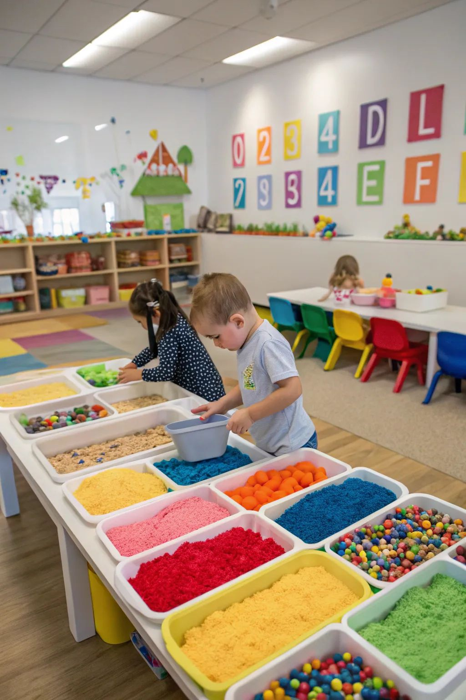
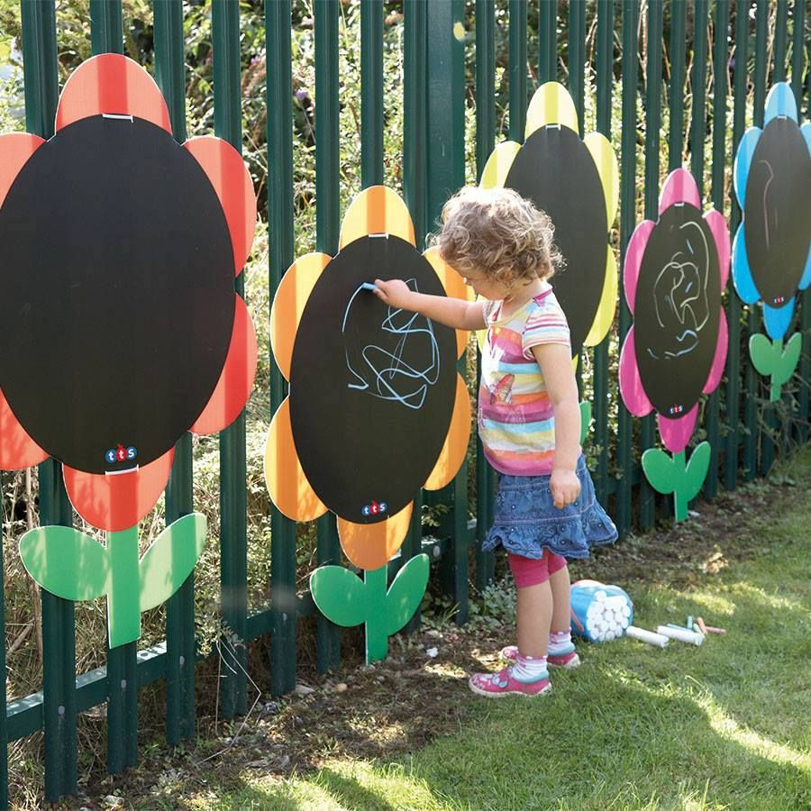
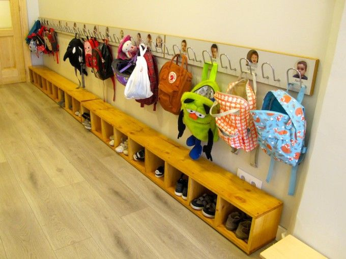
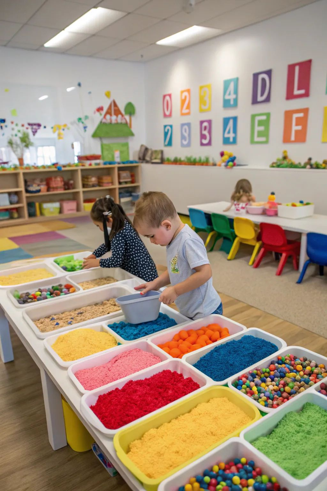
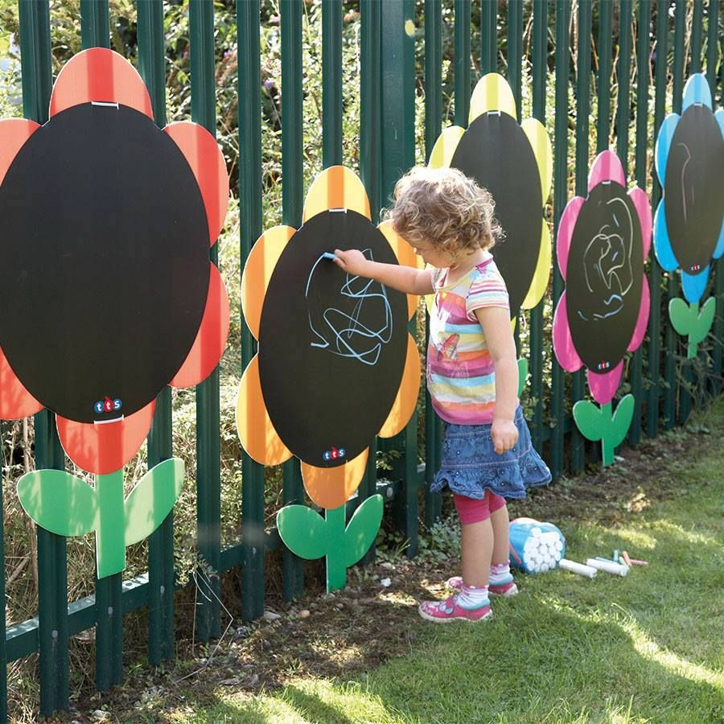
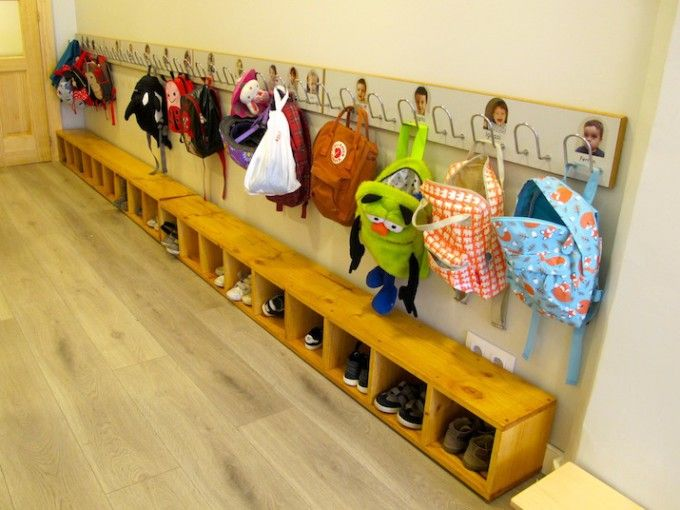

Dove crescere è un’avventura
Scopri un mondo di giochi, sorrisi e apprendimento: il nostro asilo è pensato per far sbocciare ogni piccolo talento in un ambiente sereno, creativo e stimolante.
ContattaciChi Siamo
L’Asilo Santa Monica è uno spazio educativo pensato per accompagnare i bambini nei primi passi della loro crescita, favorendone lo sviluppo armonico in un ambiente sereno e stimolante. Da anni accogliamo con gioia i più piccoli, offrendo loro un luogo sicuro, ricco di affetto, esperienze e relazioni positive. Accogliamo bambini dai 12 ai 36 mesi, accompagnandoli in un percorso educativo pensato per rispondere ai loro bisogni affettivi, relazionali e cognitivi. Le nostre giornate si articolano tra attività ludiche, laboratori creativi, momenti di gioco libero e routine pensate per dare sicurezza e continuità. Crediamo fortemente nella collaborazione con le famiglie, perché la crescita dei bambini è un cammino che si costruisce insieme, giorno dopo giorno. Per questo promuoviamo un dialogo costante, trasparente e partecipativo con i genitori. Il nostro team di educatrici qualificate lavora con passione e professionalità per garantire a ogni bambino un’esperienza educativa ricca, coinvolgente e costruita su misura per le sue esigenze. All’Asilo Santa Monica ogni bambino è accolto, ascoltato e accompagnato con cura... per crescere insieme, passo dopo passo.
I Nostri Servizi
- Attività educative personalizzate
- Laboratori creativi, musicali e linguistici
- Spazi verdi e area gioco attrezzata
- Assistenza educativa qualificata
Galleria Fotografica
 





Orari di Apertura
| Giorno | Orario |
|---|---|
| Lunedì - Venerdì | 08:00 – 14:00 |
| Sabato | 08:00 – 12:00 |
| Domenica | Chiuso |